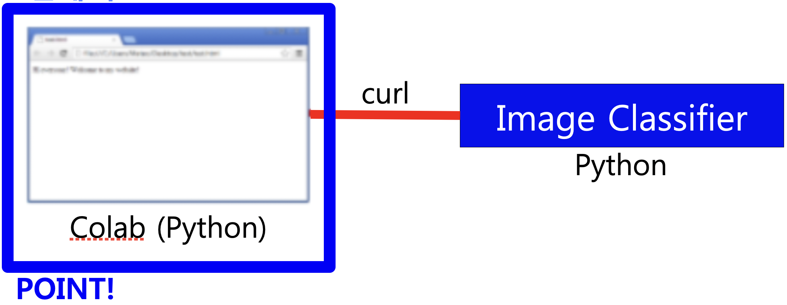
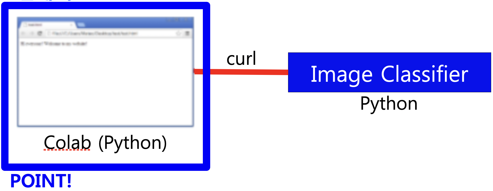

Implemented Functions

|
A function to Classify Images The trained model can automatically classify images into folders. |

|
A function to Have the program Learn with Images A given image is pre-trained to produce a trained model. |
Things to Contribute to Society
If you create an image classification model, it automatically organizes photos, so there is no need to check and classify photos one by one.
If you create an image classification model, it automatically organizes photos, so there is no need to check and classify photos one by one.
Background and Purpose
It is very cumbersome to check and categorize the photos one by one. So, we implemented a program that automatically organizes using the image classification model.
It is very cumbersome to check and categorize the photos one by one. So, we implemented a program that automatically organizes using the image classification model.
What I Learned
- I learned how to create a trained model in Jupyter Notebook.
- I learned how to build a server with Flask to handle HTTP POST requests.
- I learned how to run Command or Terminal commands in Python.
Process
- I downloaded the ‘Ma Dong-Seok/Kim Jong-Kook/Lee Byung-Hun classifier’ source code.
- I modified it from downloading images from the web to uploading images yourself.
- I use Flask, so when an image classification model is created, a link is generated. So if you send an image as an HTTP POST to that link, you will get a response which class the image you sent belongs to. I used this link to sort the images on the desktop, so I made a separate Python program.
- I didn't know how to run Command or Terminal commands in Python, how to create a folder when it doesn't exist, or how to load a list of files. So, I found them all on Google.
- In this way, I was able to implement the program I wanted.
A thing to have Done my Best to Strengthen my Abilities
Analyzing existing programs implemented in Jupyter Notebook and re-implementing them as new programs
Analyzing existing programs implemented in Jupyter Notebook and re-implementing them as new programs
Overall Structure


Used Skills
Jupyter Notebook, Flask
Jupyter Notebook, Flask
Development Environment
Colab, Python IDLE
Colab, Python IDLE
Further Explanations